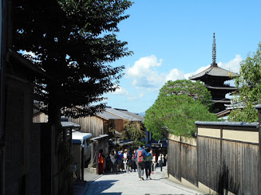

数多くの寺社仏閣で知られる、古都京都。
日本らしさを感じられることから、外国人も多く訪れます。
1994年12月、「古都京都の文化財」として日本で5件目の世界遺産として登録されました。
言うまでもありませんが、京都の寺社仏閣は圧巻です。京都は、観光地が密集していて、
主な観光地を１日で回ることも難しくありません。
そして、せっかく寺社仏閣を回るなら、現地のガイドさんに案内してもらうのもおすすめ。
詳しい豆知識などより深く古都京都を味わえます。
そして、御朱印帳を忘れずに。旅の思い出をしっかり残しておきましょう。
ここからはバスでの移動なので、1日乗車券があると◎
カラフルなくくり猿と呼ばれるお守りが有名。
ぜひここで願い事をしておきましょう！
美しい京都の街並みが見られます。
お土産を買うところもたくさんあるので、じっくり選べます！
名物である湯豆腐をじっくり堪能しましょう。
言わずと知れた京都の一大名所の一つ。春夏秋冬、違った姿を見せる清水寺。
どの季節に行っても、楽しめるはずです。

一日の最後には、これまた名所の金閣寺。
京都中心部からは少し離れていて、清水寺から一時間弱かかりますが、
足を運ぶ価値は十二分にあります。